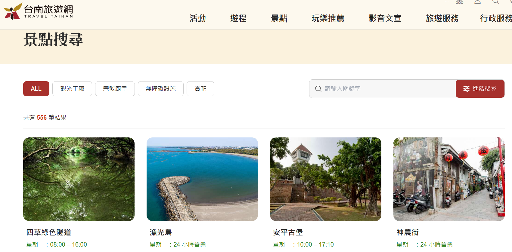

🧭
台南小導遊養成記
四年級上學期 · 第 1 課：旅行經驗與主題發想
第一節 · 找景點
① 台南，超好玩！
📝 你有去台南哪些地方旅遊過？打幾個字上去，看看全班拼出什麼台南地圖！
每年有好幾百萬人特地搭高鐵來台南玩。
如果有外國 YouTuber 要你當導遊帶路 —— 你是不是一片空白？😅
我們每天住在台南，把它當成「經過的地方」。但在別人眼中，這裡是特地要來的觀光勝地。今天我們用「觀光客的眼睛」重新看台南！
🙋 你帶人玩過台南嗎？
② 換個角度看
同一間廟，「路過」跟「用觀光客的眼睛細看」，看到的東西差很多！
🚶 路過視角

如果只是經過，可能就覺得「喔，一間廟」。
🔍 觀光客細看視角
🤔 你發現「路過」跟「用觀光客的眼睛細看」，看到的東西有什麼不同？

▶
▶ 再看看觀光局會怎麼介紹台南：冬季旅遊，來台南正好玩！
③ 找景點的好幫手：台南旅遊網

想不到要介紹哪裡？這是台南市政府的官方旅遊網，全台南的景點都在這裡，是我們找主題的好幫手！
🔎 功能一：景點搜尋
- ① 搜尋一個區有什麼景點
- ② 篩選你想要的主題（歷史古蹟、自然景觀…）
- ③ 查景點的詳細資料


🗺️ 功能二：旅遊地圖
用地圖就能看到附近有哪些景點，每一個小圖釘都是一個景點！想找學校附近的景點特別好用。
📄 點進景點，會看到…
分類、地址、營業時間、門票寫得清清楚楚（例：安平古堡）：
🏷️ 分類
歷史古蹟
歷史古蹟
🕐 時間
10:00–17:10
10:00–17:10
🎫 門票
全票70/半票35
全票70/半票35
📍 地址
安平區國勝路82號
安平區國勝路82號

④ 任務：景點調查員 🔍
打開台南旅遊網，當一位小小調查員，把答案填進來！
1. 找出 3 個位於「東區」的景點
2. 找出 1 個「在地藝文」景點
3.「水交社文化園區」週六開放時間？
⭐ 加分：「勝利國小」附近有什麼景點？
📮 繳交學習單
確定都填好了嗎？按下面按鈕交給老師（可以重交，會覆蓋前一次）。
🎉